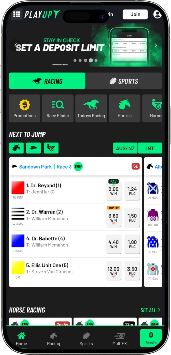

Exclusive welcome offer of
Exclusive welcome bonus of
Australia's Rising Sports Betting Platform
Top Casinos
Bonus Details
Casino
Bonuses
Rate
Free Spins
More Info
Get
Advantages
- Looking for Australia's most exciting betting experience? We offer licensed sports and racing betting with 24/7 customer service, competitive odds, and innovative betting features. Here's what makes us different:
-
Licensed multi-jurisdiction operator with trusted Australian heritage and global reach
-
65,000+ pre-match events and 40,000+ live matches monthly across 120+ sports
-
Advanced betting features including Same Game Multis and Same Race Multis for maximum excitement
-
Fast deposits with PayID, bank transfer, and credit cards with instant processing
-
Round-the-clock customer support via phone and email for immediate assistance
-
Mobile-optimized platform with native iOS and Android apps for betting anywhere, anytime
- Join thousands of satisfied Australian punters enjoying seamless betting and quick withdrawals. Our support team is always ready to assist you with any questions.
PlayUp App


About PlayUp Australia
We are a next-generation entertainment group enriching lives through rewarding online betting. Our platform unifies sports, racing, esports, and fantasy sports with competitive odds and innovative features for Australian punters.
- Launched in Australia as a proudly homegrown betting platform
- Expanded to multi-jurisdiction licensing across Australia, NZ, India, and USA
- Introduced Same Game Multis and advanced betting features for enhanced excitement
- Reached 65,000+ monthly events with 120+ sports coverage globally
We operate under strict gaming regulations with multiple licenses. Our platform employs advanced security protocols protecting your data and transactions. We prioritize responsible gambling with deposit limits and player protection tools. We continue expanding our sports coverage and betting innovations. Our commitment to Australian punters remains our top priority. Join us and discover why we're Australia's rising sports betting choice with 24/7 support and fast payouts.

Complete Sports Betting Guide
Your Ultimate Sports Betting Experience at PlayUp
Welcome to PlayUp, where we bring you Australia's most comprehensive sports betting platform with over 65,000 pre-match events and 40,000 live matches every single month. We proudly serve punters across multiple jurisdictions with our advanced betting technology and customer-first approach. Our platform covers 120+ sports including traditional favourites like AFL, NRL, cricket, and soccer, plus exciting niche markets like esports, surfing, handball, and even political events. Whether you're backing your favourite NRL team or exploring international soccer leagues, we provide competitive odds and innovative betting features that enhance every wager.
Our betting platform stands out through its user-friendly design and powerful features. We offer Same Game Multis across multiple sports, allowing you to combine different markets within a single match for bigger potential returns. Our racing section covers thoroughbred, harness, and greyhound racing from Australia, UK, and USA with both fixed odds and tote betting options. We process deposits instantly through PayID, bank transfer, credit cards, and BPAY, with minimum deposits starting at just $1. Our mobile apps for iOS and Android deliver seamless betting experiences wherever you go, with pin code and biometric security options for peace of mind.
Sports Coverage and Market Depth
We provide extensive coverage across major Australian sports with exceptional market depth. For NRL matches, we typically offer 75+ betting markets including match winner, line betting, total points, first tryscorer, and detailed player prop bets. Our AFL coverage features 100+ markets per fixture with options like winning margin, quarter betting, player disposals, and goal kicking markets. We understand Australian punters love their local sports, which is why we invest heavily in comprehensive market offerings for AFL, NRL, cricket, and Australian Rules.
International sports receive equally impressive attention on our platform. Soccer enthusiasts can bet on English Premier League, La Liga, Bundesliga, Serie A, Champions League, and A-League with markets covering match results, correct scores, half-time results, both teams to score, total goals, corner counts, and player-specific bets. Basketball fans enjoy comprehensive NBA, NBL, and Euroleague coverage with spread betting, totals, quarter betting, and player performance markets. We also cover NFL, NHL, baseball, tennis, golf, motor racing, and combat sports with competitive odds and diverse betting options.
- Rugby League (NRL): We offer comprehensive coverage of all NRL rounds including State of Origin and finals series, with 75+ markets per match covering tryscorers, margins, handicaps, and player props.
- Australian Rules Football (AFL): Every AFL match receives 100+ betting markets including winning margins, quarter results, player disposals, goal kicking markets, and Same Game Multi options.
- Cricket Betting: We cover Test matches, ODIs, T20 internationals, and domestic leagues like the Big Bash with markets on match winners, top batsmen, total runs, wickets, and session betting.
- Soccer Markets: Our soccer betting spans global competitions with markets for match results, correct scores, both teams to score, Asian handicaps, total goals, corners, cards, and player specials.
- Basketball and NBA: We provide extensive NBA and NBL betting with point spreads, totals, money lines, quarter betting, player points, rebounds, assists, and Same Game Multi combinations.
- Tennis and Individual Sports: Bet on Grand Slams, ATP, and WTA tournaments with match winners, set betting, total games, handicaps, plus coverage of golf, motor racing, MMA, and boxing.
Racing Excellence: Horses, Harness, and Greyhounds
Our racing section represents one of our strongest offerings with comprehensive coverage of Australian and international race meetings. We provide both fixed odds and tote betting options for thoroughbred racing, harness racing, and greyhound racing. Our Today's Racing section displays all upcoming meetings with convenient Next To Jump quick links for immediate betting opportunities. We cover major Australian tracks including Flemington, Randwick, Caulfield, Eagle Farm, and Moonee Valley, plus international racing from the UK and USA for around-the-clock action.
Each racecard on our platform features detailed information to help you make informed betting decisions. We display basic form guides, recent performances, jockey and trainer statistics, and track conditions. You can easily switch between fixed odds and tote betting with a single click, with our Best Tote + SP option for win bets and Middle Tote for place betting. Our exotic bet types include Quinella, Exacta, Trifecta, First Four, and Quaddie, all accessible through simple tab navigation on each racecard. We process racing bets quickly with competitive margins and reliable odds updates.
| Bet Type | Min | Max |
|---|---|---|
| Racing Win | $1 | $10,000 |
| Racing Place | $1 | $5,000 |
| Sports Single | $1 | $25,000 |
| Multi Bets | $1 | $50,000 |
| Same Game Multi | $1 | $10,000 |
| Exacta | $1 | $500 |
| Trifecta | $1 | $200 |
| First Four | $1 | $100 |
Same Game Multis and Advanced Betting Features
Same Game Multis represent one of our most popular betting features, allowing you to combine multiple selections from a single match into one bet with boosted odds. We offer SGMs across numerous sports including NRL, AFL, soccer, basketball, cricket, and more. For example, in an NRL match you might combine the match winner, total points over/under, and which team covers the line into a single multi-bet with enhanced returns. As you add selections, our platform automatically calculates the combined odds and potential payout, making it easy to create custom betting combinations.
We also provide Same Race Multis for racing enthusiasts who want to back multiple horses across different races in one bet. Our bet slip management makes it simple to construct complex wagers, with clear displays of your selections, stakes, and potential returns. You can choose which selections to include in multi-bets and adjust your stake amounts before confirming. Our mobile apps deliver the same SGM functionality with touch-optimized interfaces for quick bet construction on the go. We continually expand our SGM offerings based on popular sports and events.
Live Betting and In-Play Markets
We offer live betting across selected sports and racing events, allowing you to place wagers as the action unfolds. Our live betting section updates odds in real-time based on match developments, giving you opportunities to capitalize on changing circumstances. While live bets must be placed via phone call to our customer service team, this ensures you receive immediate assistance and confirmation for every in-play wager. We provide competitive live odds on popular sports like AFL, NRL, soccer, tennis, and basketball with markets including match winners, handicaps, totals, and next scoring plays.
Our customer service representatives are extensively trained in live betting processes and can quickly place your wagers while providing current odds and available markets. We understand the importance of speed in live betting situations, which is why we maintain 24/7 phone support for immediate assistance. While we don't currently offer live streaming, we focus on delivering competitive live odds and reliable bet placement services. Our commitment to responsible gambling extends to live betting with the same deposit limits and player protection measures applying to all bet types.
Mobile Betting Apps and Platform Access
Our native mobile apps for iOS and Android devices deliver premium betting experiences optimized for smartphones and tablets. We designed our apps with simplicity and speed in mind, ensuring you can place bets quickly without unnecessary navigation steps. The apps feature enhanced security options including pin code protection and biometric authentication using fingerprint or face recognition. You can access your full betting account, view upcoming events, check live scores, manage your bet slip, make deposits and withdrawals, and contact customer support all within the mobile app environment.
The PlayUp app organizes betting options into clear sections for Sports, Racing, Live Betting, and Promotions, making navigation intuitive even for new users. You can set your favourite sports for quicker access and receive push notifications about upcoming matches, special promotions, and bet results. Our mobile-friendly website also provides excellent functionality for punters who prefer browser-based betting without downloading an app. Whether you use our native apps or mobile web platform, you'll experience fast loading times, reliable performance, and no freezing or lag during bet placement.
Deposits, Withdrawals, and Payment Security
We support multiple convenient deposit methods tailored for Australian punters including PayID, bank transfer, credit cards, and BPAY. PayID enables instant deposits directly from your bank account using just your mobile number or email address, with funds appearing in your betting account within seconds. Credit card deposits also process instantly, allowing you to start betting immediately. Our minimum deposit requirement of just $1 makes our platform accessible to all budgets, while we don't charge any transaction fees on deposits or withdrawals.
Withdrawals are processed via secure bank transfer to your nominated Australian bank account. We prioritize fast payout processing so you can access your winnings quickly. Our platform employs advanced encryption technology to protect all financial transactions and personal data. We require account verification for security purposes, which involves confirming your identity through standard documentation. This verification protects both you and us from fraud while ensuring compliance with Australian gambling regulations. Our single-wallet system works seamlessly across different PlayUp brands, giving you unified account management.
Customer Support and Responsible Gambling
Our customer support team operates 24 hours a day, 7 days a week to assist with any questions or issues you encounter. You can reach us via phone for immediate verbal assistance or through email for detailed inquiries and documentation. Our support representatives possess deep knowledge of our platform, betting markets, payment processes, and responsible gambling tools. We pride ourselves on providing friendly, professional service that resolves issues quickly and effectively, contributing to our strong reputation among Australian punters.
We take responsible gambling seriously with comprehensive player protection measures built into our platform. During registration, you can set deposit limits that control how much you can deposit within specified timeframes. Any increases to these limits require a seven-day waiting period to take effect, giving you time to reconsider. We also offer self-exclusion options for players who need a break from betting. Our platform includes reality checks, session time limits, and links to professional gambling support organizations like Gambling Help Online. We believe betting should remain entertaining and never become problematic, which is why we encourage all players to set limits and gamble within their means.
Software Providers
Expert Betting Strategies and Tips
Maximize Your Betting Success with PlayUp
At PlayUp, we believe informed betting leads to better experiences and more enjoyable outcomes. While we provide the platform, competitive odds, and diverse markets, your betting success depends on strategy, knowledge, and disciplined bankroll management. We've compiled this comprehensive guide to help you develop effective betting approaches across sports and racing. Whether you're new to online betting or an experienced punter, these strategies and tips will enhance your understanding of different bet types, market analysis, and value identification. Remember that betting should always remain entertaining, and we encourage responsible gambling practices including setting deposit limits and never chasing losses.
Understanding value represents the foundation of successful sports betting. Value exists when the odds offered on a particular outcome are higher than the true probability of that outcome occurring. For example, if you believe a team has a 50% chance of winning but the bookmaker offers odds of $2.20, this represents value because fair odds would be $2.00. We offer competitive odds across all sports and racing markets, but identifying value requires research, analysis, and an understanding of the sport. Successful punters don't simply back favourites or their preferred teams; they seek situations where the odds offered exceed the actual probability based on their assessment.
Sports Betting Strategies for Different Markets
Different sports and bet types require tailored approaches based on the nature of the competition and available information. For Australian Rules Football, analyzing team form, injury lists, venue history, and weather conditions provides crucial insights. AFL betting markets like line betting and total points require understanding of scoring patterns, defensive capabilities, and historical head-to-head results. We offer 100+ markets per AFL match, allowing you to specialize in areas where you possess superior knowledge, whether that's first goal scorer, winning margin, or player disposal counts.
NRL betting demands focus on factors like player availability, recent performance, home advantage, and weather conditions that affect the playing surface. Rugby league matches can be high-scoring affairs or defensive struggles depending on these variables. Our 75+ markets per NRL match include options for tryscorers, total points, handicaps, and Same Game Multis combining multiple predictions. We recommend focusing on specific rounds or teams you follow closely rather than spreading yourself across all matches. Specialization allows deeper knowledge and better identification of value opportunities.
- Research Team Form and Statistics: Analyze recent performance over the last five matches, paying attention to scoring patterns, defensive records, and performance against similar opponents. We provide comprehensive statistics to support your research.
- Consider Venue and Conditions: Home advantage varies significantly across sports, with some teams performing much better at their home ground. Weather conditions, playing surface, and travel distance all impact match outcomes and should inform your betting decisions.
- Monitor Injury Reports and Team News: Key player absences dramatically affect team performance and odds. We update our markets based on confirmed team selections, but early information can provide value opportunities before odds adjust.
- Understand Different Bet Types: Match winner bets suit clear favourites, while line betting provides value on quality teams giving start. Total points markets reward knowledge of team scoring capabilities and defensive strength across different situations.
- Specialize in Specific Competitions: Deep knowledge of particular leagues or sports provides advantages over casual bettors. Whether you focus on AFL, NRL, English Premier League, or NBA, specialization improves your ability to identify value and make informed predictions.
- Compare Odds Across Markets: We offer competitive odds across all sports, but odds can vary between different bet types on the same match. Sometimes backing the underdog with handicap betting provides better value than straight match winner bets.
Racing Betting Strategies and Form Analysis
Horse racing and greyhound racing require different analytical approaches compared to team sports. Form analysis remains crucial, examining recent race results, track conditions, distance suitability, barrier draw, jockey and trainer statistics, and pace scenarios. Our racing section provides form guides and essential statistics for each runner, but successful punters dig deeper into factors like class levels, weight carried, spell length, and racing patterns. We offer both fixed odds and tote betting, with each having advantages depending on the race type and market liquidity.
Fixed odds betting provides certainty about your potential return, which proves valuable when backing short-priced favourites or when you want to lock in attractive odds before they shorten. Our Best Tote + SP option automatically gives you the better of the best tote dividend or starting price, providing excellent value for win bets. Tote betting can offer superior returns on roughies and in races with short-priced favourites where the tote pool creates better odds for place betting. We recommend understanding both betting types and selecting the most advantageous option for each individual race.
- Analyze Recent Form and Track Conditions: Horses perform differently on heavy, soft, good, and firm tracks. Check recent performances on similar conditions and note if the runner has winning form at the track and distance. Our form guides highlight these crucial factors.
- Consider Barrier Draw and Racing Pattern: Barrier draws significantly impact results, especially on tighter tracks. Leaders need good barriers, while closers benefit from settled positions. Understanding pace scenarios helps predict which running styles will succeed.
- Evaluate Jockey and Trainer Statistics: Top jockeys and trainers achieve higher strike rates for good reasons. Track their recent form and historical success at particular venues. Apprentice jockeys claiming weight allowances can provide value opportunities in handicap races.
- Understand Class Levels and Weight: Horses stepping up or down in class face different competition levels. Weight carried affects performance, particularly in longer races. Look for horses carrying less weight than recent runs or proven weight carriers in quality races.
- Exotic Bets for Enhanced Returns: Quinellas, exactas, trifectas, and first fours provide opportunities for significant returns from small stakes. We offer all exotic bet types with simple selection processes. Consider boxing or wheel bets to cover multiple combinations.
- Use Same Race Multis Strategically: Combining selections across different races allows banking on multiple winning selections. Start with shorter-priced chances for building confidence, then potentially include value selections for enhanced odds on your multi-bet.
Bankroll Management and Betting Discipline
Effective bankroll management separates recreational entertainment from problematic gambling. We strongly recommend establishing a dedicated betting bankroll separate from essential living expenses and never betting money you cannot afford to lose. A common approach involves using percentage-based staking, where each bet represents a fixed percentage of your total bankroll, typically between 1% and 5% depending on confidence level and perceived value. This approach protects your bankroll during losing streaks while allowing it to grow during winning periods.
Staking strategies should reflect your confidence and the perceived value in each bet. Many successful punters use a ratings system assigning different stake levels based on bet quality. For example, standard bets might use 1% of bankroll, good value opportunities 2%, and exceptional value situations 3% maximum. We never recommend placing your entire bankroll or a large portion on a single bet, regardless of confidence level. Sports and racing contain inherent unpredictability, and even the strongest favorites sometimes lose. During our registration process, we offer deposit limit tools that help you maintain disciplined bankroll management by preventing excessive deposits during emotional periods.
Multi-Bet Strategies and Same Game Multis
Multi-bets combine multiple selections into a single wager with multiplied odds, offering potential for substantial returns from modest stakes. However, multis also multiply risk since all selections must win for the bet to succeed. We offer extensive multi-bet options across sports and racing, including our popular Same Game Multi feature. Successful multi-betting requires finding multiple value selections rather than simply combining favorites. A common mistake involves building long multi-bets with 8-10 legs where just one failure loses the entire stake.
Our Same Game Multi functionality allows combining different markets within a single match, such as backing the match winner, total points range, and first scorer in an NRL game. These correlated outcomes often provide boosted odds compared to traditional multis. When constructing SGMs, consider how selections interact. For example, if you back a team to win by a large margin, also backing high total points creates logical consistency. We display updated odds as you add each selection, helping you optimize your Same Game Multi construction for the best value combinations.
- Limit Multi-Bet Legs: Shorter multis with 2-4 legs provide better winning chances than lengthy combinations. We suggest focusing on your strongest selections rather than building long multis that rarely succeed despite attractive potential payouts.
- Seek Value in Each Selection: Every leg in your multi should represent genuine value, not just favorite selections added to boost odds. Multiple value picks compound into significant edges, while favorites compress returns without proportionate winning probability increases.
- Consider Correlated Outcomes in SGMs: When building Same Game Multis, think about how different markets relate. Backing both a high-scoring match and low-scoring first half creates logical inconsistency, while team win plus specific player performance markets can work together.
- Use Multi-Bets for Entertainment: Multis provide exciting betting experiences with potential for large returns from small stakes. We support their entertainment value but recommend keeping stakes modest since winning probability decreases with each additional leg.
- Mix Sports Knowledgeably: Cross-sport multis work best when you possess expertise in all included sports. Don't add selections from unfamiliar competitions just to increase odds. Specialization in 2-3 sports provides better results than spreading across many.
Live Betting Strategies and In-Play Opportunities
Live betting presents unique opportunities for experienced punters who can analyze unfolding match dynamics and identify value in adjusted odds. We offer live betting on selected sports with odds updating based on score, time remaining, and match momentum. Successful live betting requires watching the event and making quick decisions based on performance rather than pre-match statistics alone. Live odds often overreact to recent events, creating value opportunities for punters who maintain objective analysis during matches.
For example, in an AFL match where a favored team concedes two early goals, live odds might shift dramatically despite the match being in early stages. Experienced punters recognize overreactions and back value selections at enhanced prices. Similarly, in tennis matches, odds swing significantly with each service break despite matches often following serve for extended periods. Our phone-based live betting service ensures you can place these time-sensitive wagers with immediate confirmation and competitive odds from our experienced staff.
Esports and Alternative Sports Betting
Our platform covers emerging betting markets including esports with games like League of Legends, Dota 2, CS:GO, and more. Esports betting requires understanding of game mechanics, team compositions, map selections, and player form similar to traditional sports analysis. The esports community produces extensive statistics and analysis that informed bettors leverage for identifying value. We provide competitive odds on major esports tournaments and leagues worldwide, opening betting opportunities for younger demographics and gaming enthusiasts.
Alternative sports betting includes markets on surfing, handball, political events, and entertainment outcomes. These niche markets often receive less analytical attention, creating potential value opportunities for specialized knowledge. Our political betting covers major elections in Australia, USA, and globally, with markets on election winners, seat counts, and margin victories. We continually expand our alternative sports offerings based on popular demand and availability of competitive markets.
Promotions and Bonus Utilization
We regularly offer promotions for both new and existing customers across sports and racing betting. Our promotions section displays current offers including enhanced odds, bonus bets, cashback specials, and loyalty rewards. When utilizing promotions, always read the terms and conditions carefully to understand wagering requirements, minimum odds, bet types, and expiry dates. Promotional offers provide excellent value when used strategically on bets you would place anyway at standard odds.
New customers often receive welcome offers requiring a minimum first deposit and bet. These bonuses provide additional betting funds for exploring our platform and markets. Existing customers enjoy regular reload bonuses, special event promotions, and loyalty rewards based on betting activity. We display all current promotions clearly in our app and website, making it easy to identify opportunities and opt into relevant offers.
Record Keeping and Performance Analysis
Serious punters maintain detailed records of all bets including date, sport, event, selection, stake, odds, and outcome. This discipline enables objective performance analysis over time, identifying which sports, bet types, and strategies produce positive returns. Our platform provides accessible betting history showing all placed bets and outcomes, but we recommend maintaining personal spreadsheets for deeper analysis including factors like reasons for each bet and confidence levels.
Performance analysis helps identify strengths and weaknesses in your betting approach. You might discover strong results in specific sports or bet types while struggling in others. This information guides future betting focus toward profitable areas and away from unprofitable patterns. Many successful punters review performance monthly or quarterly, adjusting strategies based on objective results rather than memory or emotion. We support informed, analytical betting approaches that enhance entertainment while maintaining responsible gambling practices.
Responsible Gambling and Player Support
At PlayUp, we prioritize responsible gambling and player wellbeing above all else. Betting should remain entertaining and never become a source of financial or personal problems. We provide comprehensive responsible gambling tools including deposit limits, reality checks, session time limits, and self-exclusion options. During registration, we encourage all players to set deposit limits appropriate for their circumstances, and we enforce seven-day waiting periods before increasing these limits.
If you ever feel concerned about your betting behavior or that of someone you know, we encourage accessing professional support through organizations like Gambling Help Online. Warning signs of problem gambling include betting beyond your means, chasing losses, neglecting responsibilities, borrowing money for betting, or gambling causing relationship or emotional problems. Our customer support team can assist with activating cooling-off periods or self-exclusion if you need a break from betting. We believe in sustainable entertainment where betting remains fun, controlled, and within your personal limits. Never hesitate to reach out for support or utilize our responsible gambling tools whenever needed.
Frequently Asked Questions
Creating an account takes just minutes. Visit our website or download our app, click Register, and provide your personal details including name, email, and phone number. Verify your email and set a password. During registration, set a deposit limit for responsible gambling. Upload identity documents for verification, then make your first deposit of $1 or more to start betting.
We offer comprehensive coverage of 120+ sports including AFL, NRL, cricket, soccer, basketball, tennis, NFL, and more. Our racing section covers thoroughbred horses, harness racing, and greyhounds from Australia, UK, and USA tracks. We provide 65,000+ pre-match events monthly and 40,000+ live matches. You can also bet on esports, surfing, politics, and niche sports with competitive odds across all markets.
We accept multiple convenient deposit methods for Australian customers including PayID, bank transfer, credit cards, and BPAY. PayID provides instant deposits using your mobile number or email address. Credit card deposits also process immediately. Our minimum deposit is just $1 and we don't charge any transaction fees. All deposits are secured with advanced encryption technology for your protection.
We process withdrawal requests as quickly as possible via secure bank transfer to your nominated Australian bank account. Processing times vary depending on your bank's clearing procedures but typically complete within 1-3 business days. For security purposes, we require account verification before your first withdrawal. Contact our 24/7 customer support team if you have questions about withdrawal status.
Yes, we offer Same Game Multis across multiple sports including NRL, AFL, soccer, basketball, and cricket. SGMs allow you to combine different markets within a single match for boosted odds and bigger potential returns. For example, combine match winner, total points, and player performance markets in one bet. Our platform automatically calculates combined odds as you add selections, making SGM construction simple and exciting.
Yes, we offer native mobile apps for both iOS and Android devices available for free download. Our apps provide full betting functionality with enhanced security including pin code and biometric authentication. You can place bets, make deposits and withdrawals, check results, access promotions, and contact customer support all within the app. Our mobile website also works excellent for browser-based betting without downloading.
Our customer support team operates 24 hours a day, 7 days a week to assist you. Contact us via phone for immediate verbal assistance with any questions or issues. You can also reach us through email for detailed inquiries. Our experienced support representatives possess comprehensive knowledge of our platform, betting markets, payments, and responsible gambling tools to help resolve any concerns quickly.
We provide comprehensive responsible gambling tools including deposit limits that control your spending within set timeframes. You can set reality checks, session time limits, and access self-exclusion options if you need a break from betting. Any deposit limit increases require a seven-day waiting period. We also provide links to professional support organizations like Gambling Help Online for anyone concerned about their gambling.
Yes, we offer live betting on selected sports and racing events with odds updating in real-time based on match developments. Live bets must be placed via phone call to our 24/7 customer support team who will provide current odds and available markets. This ensures immediate assistance and confirmation for all in-play wagers. We offer competitive live odds on popular sports like AFL, NRL, soccer, tennis, and basketball.
Our minimum bet is just $1 across all sports and racing markets, making betting accessible for all budgets. Maximum bet limits vary by market type, with sports singles typically accepting up to $25,000, multi-bets up to $50,000, and racing bets between $5,000-$10,000 depending on the bet type. Same Game Multis generally have a $10,000 maximum. These limits ensure responsible betting while accommodating serious punters.